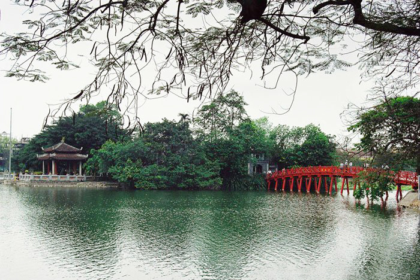
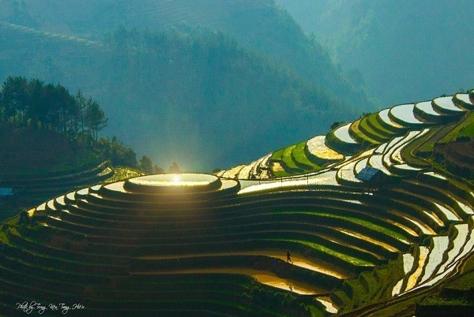
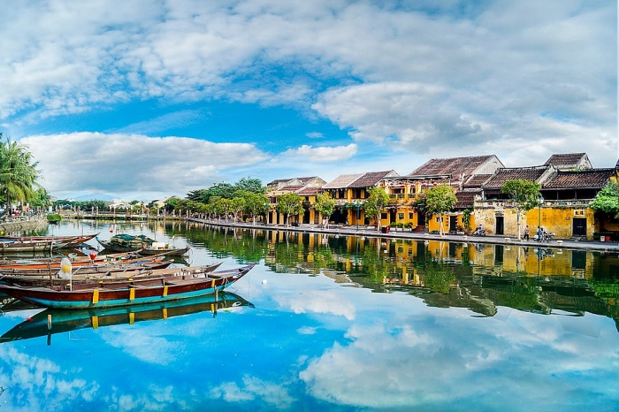
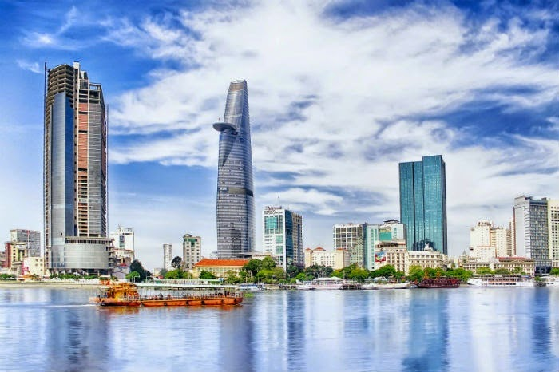
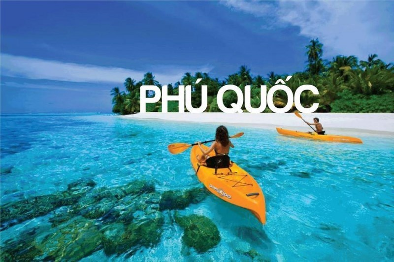

HANOI
VIETNAM's capital, Hanoi is famous for long history and traditional culture of the nation.

SAPA
Sapa is the destination for you to admire the wild beauty of terraced fields, discover the customs and cultural beauty of the ethnic groups in the mountains.

HOIAN
Hoi An is a city in Quang Nam province with many old quarters built in the 16th century and still exists almost intact up to now.

HOCHIMINH CITY
Traveling to Ho Chi Minh City, you come to a city located in the middle of the rich Southern region, bordering the South of the Southeast and the Northern edge of the South West.

PHUQUOC
Phu Quoc, also known as Dao Ngoc, is Vietnam's largest island, and is also the largest of the 22 islands here, located in the Gulf of Thailand.